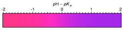
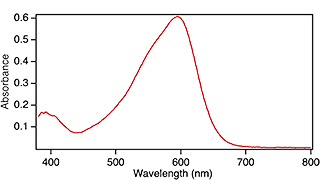

Instructor:
Students:
Level:
Calvin was designed to enable students enrolled at Cornell University to perform our standard inquiry-based laboratory experiments at home during the Covid-19 pandemic. Calvin is a compact interpreted language that simulates student-designed experiments from laboratory data collected at Cornell shortly prior to lock down.
Student groups (or individual students) design their experiments for Calvin using a text editor. (Syntax coloring is available for a number of popular free editors.) Students then e-mail their experiment to a watched folder in the cloud that they cannot otherwise access. This maintains confidentiality. Calvin opens the file, simulates the experiment, generates a rtf file documenting the outcome and csv files of any spectra produced, zips the whole shebang, and uploads the result to a different folder that the students can access from an internet browser. At Cornell, we have implemented this using Box, because it enables Cornell authentication. Students can only access their specific output folder.
Calvin is compatible with other cloud solutions, such as Google Drive; however, some may not allow e-mail submission. Students could alternatively drop their experiment file in a watched folder.
Experiments are described in a simple language that mimics spoken English. For example, the box below shows a simple experiment where Calvin titrates his stock acid solution with his stock base solution to make sure everything is working. The syntax coloring is generated automatically by the text editor.
// Identifying our experiments
Set_Group_Name(name: "Weimaraners")
Set_TA_Name(name: "Hines")
// Getting stock solutions
Fill_Empty_100ml_Beaker_with_Standardized_Base(newName: "stock_base")
Fill_Empty_100ml_Beaker_with_Standardized_Acid(newName: "stock_acid")
// Making acid solution for titration
Make_New_100ml_Beaker(newName: "titration_beaker")
Transfer_Soln_with_20ml_Pipette(from: "stock_acid", to: "titration_beaker")
Add_One_Drop_of_Indicator(indicator: "Thymol_blue", to: "titration_beaker")
// Get the buret ready
Fill_50ml_Buret(from: "stock_base")
// Performing the titration
Titrate_Beaker_from_Buret_until_Color_Change(into: "titration_beaker")
// Take a visible spectrum
Take_Spectrum(of: "titration_beaker")
Calvin produces data derived from actual experiments. For example, the output from the simple titration above includes the solution color before the titration began, the solution color after the endpoint was reached, and the visible spectrum of the final solution, which is also saved as a csv file:
// Performing the titration
Titrate_Beaker_from_Buret_until_Color_Change(into: "titration_beaker")
The color of the solution in titration_beaker is:
The volume of solution in the buret is now 49.45 ml.
Performing titration now.
The volume of solution in the buret is now 31.75 ml.
The color of the solution in titration_beaker is:
The color range of the indicator thymol_blue is:

// Take a visible spectrum
Take_Spectrum(of: "titration_beaker")
The spectrum of the solution in titration_beaker is:

This spectrum has been saved as Spectrum_1.csv
All of the data used by Calvin are real and were collected in the undergraduate labs at Cornell University shortly before Cornell went on lock down. All of the colors and spectra generated by Calvin are calculated from actual spectra of indicators using the CIE 1931 color space.
Calvin primary mission is to enable our students to perform three inquiry-based experiments:
Calvin comes stocked with a wide range of known and unknown indicators, solid acids, and buffers. The unknowns can be randomized and/or renamed by changing a .csv file. More unknowns can be easily added.
Think of Calvin as the chemicals, glassware, and spectrometers in a teaching laboratory. You can use these materials to perform a wide range of experiments, from very proscriptive activities to completely inquiry-based experiments. Calvin is adaptable to your curriculum.
Calvin is not about programming. There is no “if this, then that.” There are no loops. Calvin's commands mimic spoken English.
Calvin uses a simple, low-bandwidth text interface, because some of my students are in remote locations with poor internet access. I have students from Alaska to Africa and everywhere in between!
Calvin obeys the same laws of chemistry as a real laboratory. “Pure” H2O does not have a pH of 7.00 in my lab or in Calvin. Volumes measured by pipette, buret, or graduated cylinder have realistic precisions. Adding 125 mL of solution to a 100 mL beaker causes a spill just like in the lab.
Calvin does not expose the operating computer to access by bad guys. The computer running Calvin just transfers files back and forth to folders in the cloud. Calvin ignores all commands except chemistry, so your computer remains safe. Each experiment takes a few seconds for Calvin to complete, so only a single computer is needed for even the largest courses.
Calvin is currently running on Mac OS, but I could get it running on Windows if there is demand.
Calvin's output is in English. If there is demand, I could get it running in other languages with some translation help.
Everything you need to get Calvin running in your classroom is freely available on GitHub. You may want to look through:
We have used Calvin to run four experiments at Cornell. Three of the experiments are inquiry-driven explorations of acid-base chemistry: pKa of an Unknown Acid-Base Indicator, Identification of an Unknown Solid Acid, and Composition of an Unknown Buffer. The have also used it to measure the equilibrium constant for a simple reaction, Fe3+ + SCN– ⇌ FeSCN2+. The student guides to these experiments are available below.
If you would like to use Calvin in your (virtual) classroom, everything you need is available for download on GitHub. If you use Calvin, please send an e-mail to Melissa.Hines@cornell.edu letting me know your location, your school, and approximately how many students Calvin will impact.
If you have a problem or find a bug, contact me at Melissa.Hines@cornell.edu
I am an advocate of hands-on education. No simulation or computer program can ever replace that. When normalcy returns, Calvin will retire.